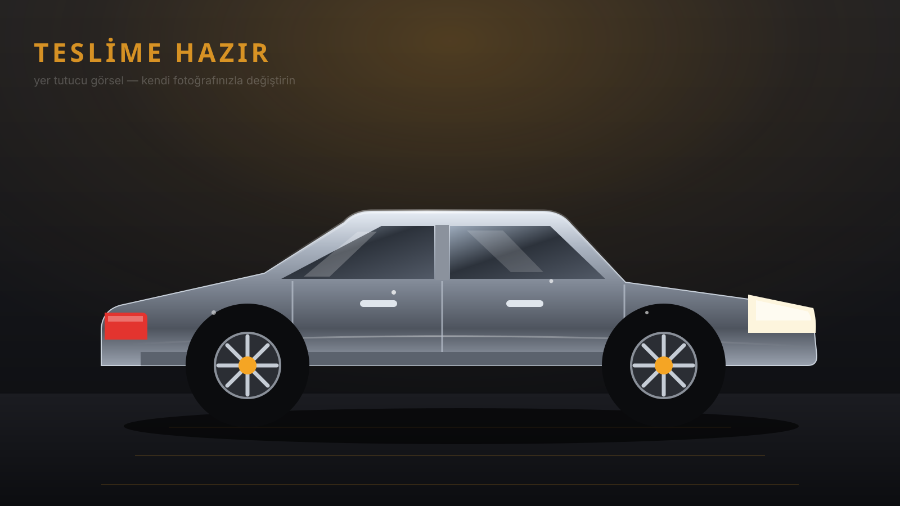
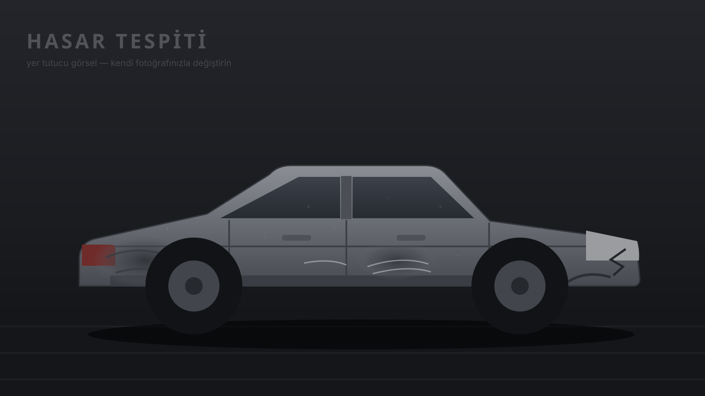

Önce / sonra & atölye
Kaporta, boya, PDR, PPF ve detailing işlerimizden seçilmiş çalışmalar.
Önce / Sonra
Ortadaki çizgiyi sürükleyin ya da klavye oklarını kullanın.

SONRA
ÖNCE* Buradaki görseller yer tutucudur — kendi önce/sonra fotoğraflarınızı
assets/img/before.jpg ve assets/img/after.jpg olarak ekleyip src değerlerini değiştirin.
Atölyeden
Her gün yeni proje paylaşıyoruz. Güncel içerikler Instagram hesabımızda.
* Galeri kutuları yer tutucudur; assets/img/ içine kendi fotoğraflarınızı koyup
<div class="gal__ph"> yerine <img src="assets/img/is1.jpg" alt="..."> yazın.
WhatsApp'tan 2-3 fotoğraf yeterli. Ön bilgilendirme ücretsiz.